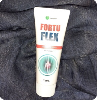
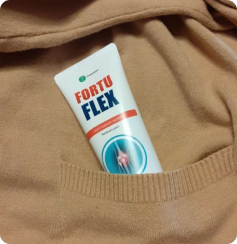

ЗДРАВЕТО НА НАЦИЯТА
100-ГОДИШНИЯТ МАРАТОНЕЦ ПИТЪР ВЕБЕР ИЗНЕНАДА ЦЕЛИЯ СВЯТ СЪС ЗДРАВЕТО СИ. РЕЦЕПТА ЗА ЗДРАВИ СТАВИ
ПИТЪР ВЕБЕР
100-годишен маратонец
Видеокадрите с Питър Вебер, ултрамаратонецът, който въпреки че е на 100 години, се справя с маратонската дистанция с лекота, шокираха света. Предвид интереса на аудиторията на нашия канал към маратонеца, решихме да направим специално интервю с него. Как може Питър на неговата възраст да бяга маратони? Отговорите на тези и други въпроси можете да намерите в нашето интервю.
Житейската история на Питър Вебер

На снимката Питър е със съпругата си Мери. Тя умира от фиброза през 2010 г.
“Моето сърце”, казва той за нея.
Редакционен екип: Питър, благодаря Ви, че се съгласихте да говорите с нас. Мисля, че сте наясно с популярността си в интернет? Милиони потребители по света се изненадаха като ви видяха как бягате.
Питър: Здравейте. Да, въпреки възрастта си понякога използвам интернет и бях приятно изненадан от славата, която ми се стовари.
Редакционен екип: Нека започнем с вашата младост. Както научихме от други интервюта, през този период сте започнали да спортувате?
Питър: Да, абсолютно правилно. Всичко започна със спорт и тренировки по време на службата ми във флота. За да поддържам формата си, обръщах специално внимание на бягането. Не бих могъл да се нарека истински спортист, по-скоро просто водех активен начин на живот. Когато се върнах от казармата, завърших електроинженерство и започнах работа в енергийна компания. Бягането през военната служба се превърна в навик и реших, че ще бягам всеки ден.
Редакционен екип: И така, тичате повече от 80 години?
Питър: Всъщност не. Имах дълга 5-годишна пауза, когато навърших 41 години.
На 100-годишна възраст Питър е във фитнеса с треньор и спазва режим
Редакционен екип: Каква беше причината да си вземете толкова дълга почивка?
Питър: На 41-годишна възраст реших, както винаги, да отида да тичам вечер. Винаги съм бягал с приблизително еднаква скорост, с едно и също темпо. Вечерта реших да ускоря малко темпото - вярвате или не, исках да приключа с бягането по-рано, за да мога да гледам един филм по телевизията. Изведнъж усетих странна скованост в движенията си. Дори началото на бягането беше болезнено и цялото ми тяло беше слабо. Разбира се, не продължих да тичам, а се прибрах вкъщи: помислих, че това е следствие от интензивните тренировки.
Но на следващия ден симптомите пак ме преследваха. Седмица след инцидента стигнах дотам, че ми беше трудно да ставам от леглото и не можех да върша обичайните битови задължения. Докато се движех, усещах остра болка, която се засилваше, когато докосвах ставите си. Лакътните, коленните и тазобедрените ми стави започнаха да скърцат, да пукат.
Няколко дни по-късно се добавиха и други симптоми, като подуване и скованост около ставите, локално зачервяване на кожата. Понякога крайниците ми изтръпваха за известно време: не можех дори да държа чаша, защото пръстите много ме боляха. Когато към тези симптоми се прибави и треската, много се изплаших и реших да отида на лекар.

Хрущял, засегнат от остеоартрит
Нормален хрущял
След направените тестове и прегледи лекарят ми каза, че имам ставно заболяване: ревматоиден артрит и полиартрит. Трябва да призная, че бях доста изненадан - спортувам почти през целия си съзнателен живот и никога не съм очаквал, че могат да се появят проблеми със ставите на тази възраст.
Редакционен екип: Дори активното спортуване не е помогнало за предотвратяване на проблема?
Питър: Все още си спомням какво точно ми каза лекарят тогава. Ставите играят много важна роля в опорно-двигателния апарат на човека. Те имат определен "срок на годност", след който сами започват да стареят. Човек може да изглежда млад, но ставите му могат да бъдат много болни. За съжаление това се отнася за абсолютно всички. В рамките на няколко години всички мои познати - както спортисти, така и такива, които никога не са спортували - започнаха да се оплакват от ставни проблеми.
Редакционен екип: Но ако сега все още продължавате да бягате, означава ли това, че проблемът е преодолян?
Питър: Това е много интересна история. В продължение на четири години прекарвах много време в лечение. Възстановителна гимнастика, специални упражнения и изследвания - започнах да си мисля, че животът ми никога повече няма да бъде същият и че ще трябва да се откажа от бягането. Използвах услугите на алтернативната медицина, но нямаше положителни резултати.
Единственото, което лекарите ме посъветваха да направя, беше да вземам болкоуспокояващи, които имаха само временен ефект. След това продължих да посещавам други специалисти и ми бяха препоръчани различни лекарства. Както сега си спомням: нямаше никакъв резултат. Бях започнал да се отчайвам, но спортът определи характера ми и със сигурност нямаше да се предам. Възстановяването ми започна, когато реших да се обадя на един мой познат, военен лекар, с когото се бях запознал, докато бях още в армията.
“Моят млад отбор маратонци” - както Питър нарича приятелите си.
Редакционен екип: Той Ви посъветва да приемате определени лекарства?
Питър: Не съвсем. Дълго говорихме за проблемите със ставите. Той спомена, че това е често срещан проблем, свързан с възрастта, и стандартните лекарства няма да го решат. Стандартните медикаменти спират дегенеративния процес, но не позволяват на ставите да получават необходимите за развитието им вещества.
След като разговарях с него, си спомних, че съм чувал за подобен проблем от приятел на баща ми в младежките му години. Баща ми също се оплакваше от болки в ставите и този приятел го посъветва да пие отвара от някои естествени съставки и тя в крайна сметка му помогна.
Редакционен екип: И как преодоляхте проблема със ставите?
Питър: Опитах се да опресня спомените си, като четях енциклопедии и медицински справочници. Да, намерих информация за въздействието на естествените съставки върху ставите, но не можех да разбера как да я използвам. Няколко дни по-късно ми се обади един мой познат, същият лекар, за когото вече ви бях разказал. Той ме посъветва да отида при специалист в друг град, което и направих.
Все още си спомням колко изненадан бях, когато го видях. Той веднага започна да ми разказва за естествените хондропротектори – билкови съставки, които помагат на ставите да се обновят. Той ми каза, че днес има само един продукт, което съдържа тези съставки.
Редакционен екип: Разкажете ни повече за този продукт. Това ще бъде полезна информация за нашите зрители, които страдат от това свързано с възрастта заболяване.
Питър: Да, този продукт се казва Fortuflex. Изкарах няколко курса на лечение. Положителните промени започнаха след първия курс. Слабостта в тялото започна постепенно да изчезва, движенията станаха по-малко ограничени, болезнените усещания изчезнаха. След като минах първия курс, направих необходимите изследвания и за да затвърдя резултата, лекарят посъветва да изкарам втори и трети курс, обяснявайки това със сложността на моя случай.

Намаляване на разрушаването
Остеофити
Артроза
1-ва седмица
2-ра седмица
прогрес на лечението
Редакционен екип: И след като използвахте този продукт, отново започнахте да бягате?
Питър: Да, животът ми е разделен на две части. Разбира се, тялото ми отслабна след толкова дълга пауза, но започнах постепенно да се възстановявам.
Редакционен екип: Използвате ли продукта и сега?
Питър: Разбира се, само че сега го прилагам с превантивна цел. Както ми обясни моят лекар, кремът Fortuflex подпомага регенерацията на хрущялите и обновяването на ставите. Но този резултат трябва да се поддържа, защото в противен случай възрастта ще се отрази. Както виждате, при редовна профилактика резултатите все още са запазени.
- Fortuflex е продукт на основата на комплекс от биостимулатори, етерични масла и хондропротектори.
- Той има спазмолитично, болкоуспокояващо и противовъзпалително действие.
- Предотвратява риска от отлагане на соли в ставите, намалява риска от остеохондроза, артрит, артроза.
- Комбинацията от естествени съставки помага за предотвратяване на дегенеративно-дистрофичните процеси, като подобрява снабдяването на ставите с хранителни вещества.
*Медицинска справка Fortuflex от регистъра на медицинските продукти
Редакционен екип: Питър, благодаря Ви за интервюто. Пожелаваме ви нови рекорди и, разбира се, добро здраве!
Помолихме за коментар и професор Густав Ларшон, ръководител на Клиниката по ортопедия и травматология в Женева.
Редакционен екип: Здравейте. Моля, разкажете ни за крема Fortuflex.

Професор Густав Ларшон
Густав Ларшон: Здравейте, нашите медицински експерти и статистиката, която водим от няколко години, доказват ефективността на този продукт. Той се основава на естествени съставки, сред които екстракт от фортунела, екстракт от листа на черен оман, рициново масло, смола от див пипер чили, масло от цитрусов евкалипт и други.
Благодарение на комбинацията от такива компоненти продуктът има положителен ефект върху ставите и опорно-двигателния апарат като цяло. По-специално това се отнася не само до премахване на болката, но и до предотвратяване на патологии на ставите, сваляне на отока и активиране на регенерацията на тъканите. Трябва да се отбележи, че ефективността на продукта е потвърдена от изследвания при различни възрастови групи пациенти. Положителна динамика се наблюдава и при профилактична употреба на Fortuflex.
Редакционен екип: От къде могат да закупят крем Fortuflex жителите на България?
Густав Ларшон: Доколкото знам, Министерството на здравеопазването реши да включи този продукт в националната програма за подобряване на здравето. Към днешна дата е извършена покупка на едро на Fortuflex и всеки може да поръча продукта на промоционална цена чрез официалната форма за поръчка по-долу.
Официална форма за поръчка
№2341 от ..
Поръчайте Fortuflex на промоционална цена:
118 лв.
59 лв.
За да поръчате крем Fortuflex, въведете Вашето име и телефонен номер по-долу и кликнете върху бутона "Поръчайте".
*Специалната оферта изтича на ..
Коментари
Лидия Иванчева: Всяка есен имам болки в ставите и пръстите много ме болят. Посъветвайте ме струва ли си да го купя, ако ставите ми реагират на промените на времето? Чувала съм, че таблетките са по-ефективни.
4
..
Румен Иванов: Вземах само болкоуспокояващи, които ми помагаха, но временно. По съвет на мой познат лекар започнах да използвам крем Fortuflex. Използвам го само от един месец, но болката започва да отслабва. Не знам дали този ефект ще се запази дълго.
..
Маргарита Видева: Купих го за 54-годишната ми майка, която имаше постоянно отоци. Три месеца след редовното прилагане на крема се забелязва подобрение, продължаваме да мажем проблемните зони.
..
Юлия Симова: Имах същия проблем и похарчих много пари за таблетки. Чух за Fortuflex случайно, видях тубичка с крема в дома на приятелка. Тя се изказа много положително за него, ще го пробвам и аз.
..
Енчо Колев: Забелязах, че болките в коляното ми през нощта спряха, когато започнах да използвам този продукт. Не знам дали кремът лекува, но със сигурност помага на ставите. Прилагам го курсово два пъти годишно.
1
..
Динко Петров: Преди около 5 години ставите ми започнаха да скърцат. Не обърнах внимание, тъй като не ме боляха. Болезненото усещане се появи съвсем наскоро. Отидох при ревматолог и той ме посъветваха да използвам крема Fortuflex. Започнах да търся информация за продукта в интернет и намерих това интервю. Планирам да го поръчам и ще видя дали ще помогне.
..
Aна Илчева: Имах същия проблем и използвах само загряващи кремове. След месец и половина мазане с Fortuflex започнах да забелязвам някои положителни резултати. Отначало коленете не ме боляха толкова, болката беше слаба. След два пълни курса болката изчезна. Все още го използвам.Прилагам снимка
..
Ирина Маринова: На съпруга ми беше предписан Fortuflex заедно с комплексна терапия. Промяна към по-добро забелязахме след два месеца и половина. Сега ставите само малко го наболяват, но не са толкова сковани, както преди.
11
..
Филип Георгиев: Тренирах гимнастика в продължение на 10 години. Остеоартритът на колянната става започна да се проявява след спортна травма. Използвах компреси, но с времето спряха да помагат, а състоянието ми се влоши. Засега Fortuflex намали болката, но го използвам само от месец и половина. Продължавам да мажа и се надявам да оздравея.
5
..
Tихомир Стойчев: Може ли да ми кажете има ли някакви странични ефекти от крема?
..
Бетина Маринова: В инструкцията се посочва, че при по-малко от 1% от случаите се наблюдават странични ефекти под формата на леко дразнене на кожата, които отшумяват от само себе си.
..
Росица Илиева: Използвам Fortuflex от две години. Не съм имала някакви странични ефекти, но забелязах, че кремът има и силен аналгетичен ефект.
..
Ана Сотирова: Купих крема за баща ми, тъй като преди това беше използвал много препарати, но без резултат - остеоартритът му се обостри. Отидохме на прием при нов ревматолог и той ни предписа Fortuflex. Ставите спряха да го болят след един месец използване на крема. Планираме да направим изследвания, за да разберем резултатите.
..
Даниел Петров: Може ли да ми кажете дали помага при проблеми с тазобедрените стави?
4
..
Роберт Ненов Мен също ме интересува този продукт. От 47-годишна възраст имам ограничена подвижност в ставите, таблетките, които приемам, действат, но само временно.
..
Кремена Ивлева: Изглежда, че ми помогна, също имах болки в тазобедрените стави. Слагаха ми инжекции в продължение на една година и те действаха болкоуспокояващо. По съвет на лекаря ги замених с редовна употреба на крем Fortuflex. Използвам го вече шест месеца и усещам подобрение.
..